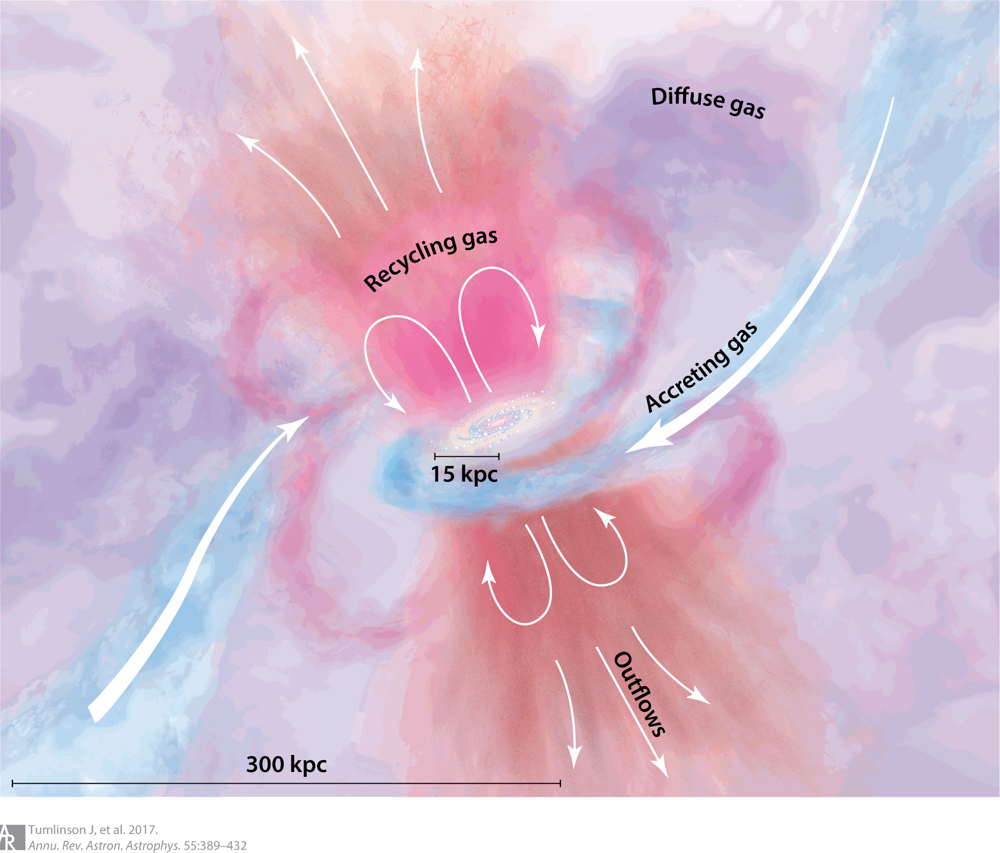
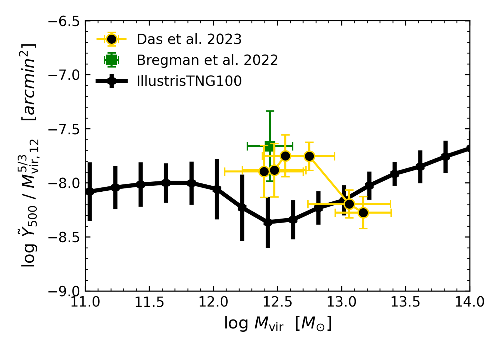
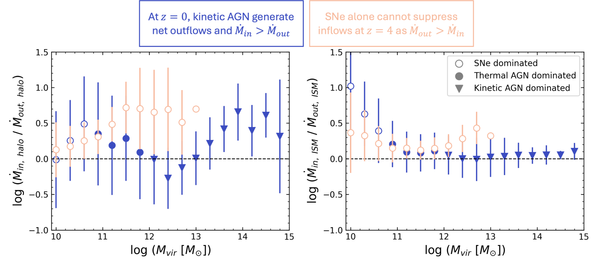
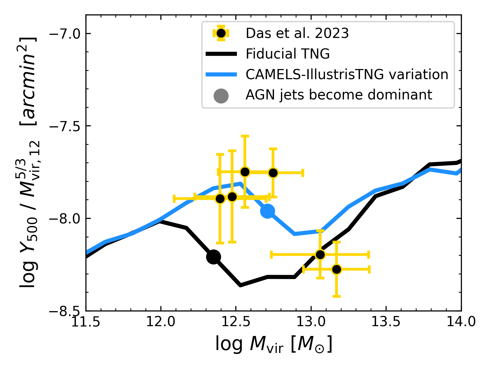
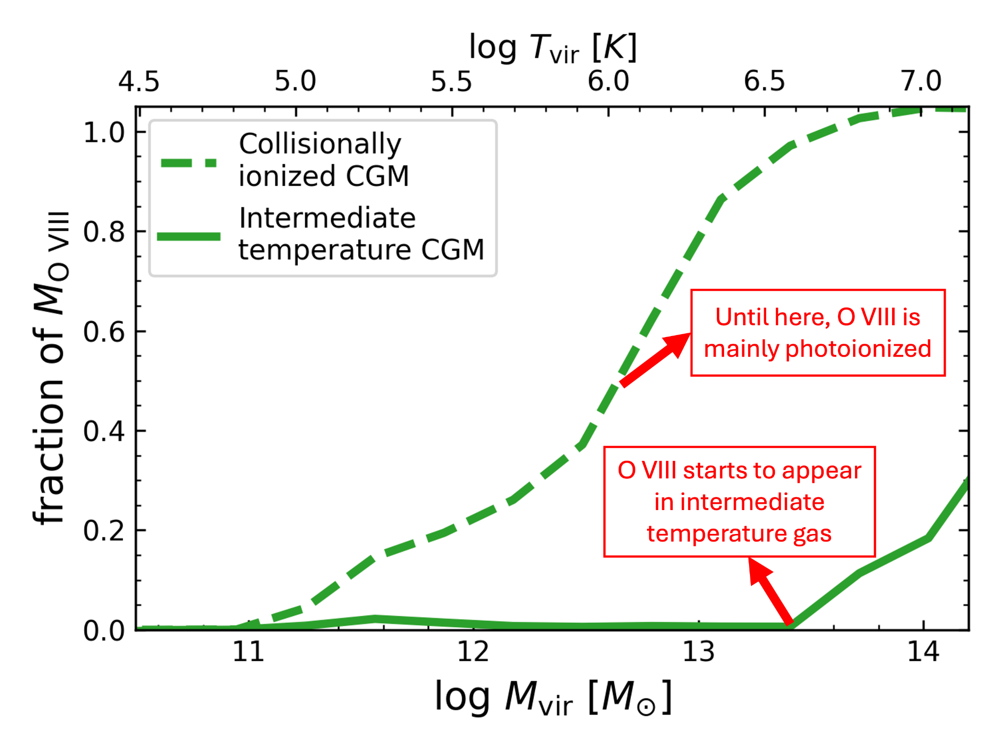

Research
The fuel used by galaxies to form their stars is intergalactic gas that is constantly pulled towards them by gravity. As the gas crosses into the circumgalactic medium (CGM), it is shock heated to very high temperatures – hundreds of thousands of degrees for Milky-Way mass galaxies – where it remains thermally supported against collapsing onto the galaxy. Once it cools it may begin its descent and sustain star formation. Inside the galaxy, feedback processes – namely accreting supermassive black holes and stars exploding as supernovae – heat the gas around them and launch it outwards, slowing down inflows and in some cases overcoming them entirely. These processes combine to generate a thermally, chemically and dynamically complex CGM.
However, the diffuse nature of the CGM makes it hard to observe, and existing observations can be tricky to interpret. In my research I interpret multiwavelength observations of the CGM using cosmological simulations and analytical models, to alleviate tension regarding properties of the CGM itself, how it is affected by galactic feedback, and how it affects galactic inflows. Below are selected research projects I worked on, and the tensions they help to alleviate.

Thermal Sunyaev-Zeldovich signals
A longstanding question in galaxy evolution concerns the whereabouts of the missing baryons: ordinary matter that is expected to accompany the dark matter surrounding galaxies but has not been fully accounted for observationally. A substantial fraction of this matter may reside in the hot, diffuse CGM, where it is difficult to detect directly. One promising way to observe it is through the thermal Sunyaev–Zeldovich (tSZ) effect, in which hot electrons in the CGM scatter photons from the cosmic microwave background (CMB). However, the observed signal depends on both the amount of hot gas and its temperature distribution, making it difficult to infer the physical properties of the CGM directly.
In this project, we used analytical models and the IllustrisTNG100 simulation to interpret recent tSZ observations of Milky Way-like galaxies. We found that the observations are consistent with the hot CGM potentially containing more than half of the baryons expected within these halos, and that hydrostatic equilibrium is more likely to be maintained if the gas is in constant entropy. We also demonstrated that two independent observational studies, based on different methods, yield mutually consistent results and agree with X-ray observations. However, we found that TNG100 underpredicts the observed tSZ signal from MW-mass galaxies, suggesting that its feedback mechanisms may eject too much gas from these halos. Our results therefore help resolve apparent observational discrepancies while identifying an important challenge for current galaxy formation simulations.

Gas Flow Rates in the Context of Feedback
Galactic feedback is thought to regulate the growth of galaxies, but how does it actually affect the gas flowing into and out of them? Gas expelled from a galaxy does not necessarily escape its surrounding halo, and may eventually fall back in and fuel additional star formation. Similarly, feedback may slow the growth of a galaxy by ejecting its existing gas or by preventing fresh gas from reaching it in the first place. Distinguishing between these processes is essential for understanding why galaxies form stars at different rates, and why some eventually stop forming them altogether.
To investigate this, we used the IllustrisTNG100 cosmological simulation to measure the inflows and outflows of gas, energy, and metals across both the boundaries of galaxies and their surrounding halos, and examined how these flows are affected by supernovae and active galactic nuclei (AGN). We found that supernova-driven feedback primarily ejects gas from galaxies, much of which is subsequently recycled, whereas kinetic AGN feedback can outright eject large fractions of the gas within MW-mass halos and substantially suppress the inflow of fresh gas into more massive halos. Only the most massive halos, larger than most known galaxy clusters, can overcome the strenght of kinetic AGN feedback and not have their accretion rates dampened. These results help distinguish the different ways feedback regulates galaxy growth and provide quantitative constraints for theoretical models of galaxy evolution.

Constraining Galactic Feedback Using tSZ
In a follow up project I attempted to bridge the gap between the tSZ signal measured in the TNG100 simulation and the observations. To do so, I employed the use of the CAMELS-TNG set of simulations, in which small changes were made to one or more of the 35 free parameters used to calibrate the TNG simulations. I found a subset of simulations that replicate the tSZ observations without breaking other scaling relations the simulation already holds. The subset of simulations that do so all delay the onset of kinetic AGN feedback – the same one that in MW-mass halos, drives significant portions of the CGM baryons out of the halo. This is demonstrates that measurements of the tSZ signal can be used to calibrate AGN feedback in future galaxy evolution models.

Sources of Ionized Oxygen
One of the main observational methods used to study the CGM is absorption-line spectroscopy, in which gas surrounding a galaxy absorbs light from a more distant source. Highly ionized oxygen, particularly O VI, O VII, and O VIII, provides valuable information about this gas. However, interpreting these measurements is complicated because the ions can be produced by two distinct processes: collisions between electrons and oxygen ions, or photoionization by background radiation. These processes are often associated with hot and cool gas, respectively, leading to different interpretations of the physical conditions and the amount of gas traced by the observations. Furthermore, it remains unclear whether these ions predominantly trace the hot, stable CGM or gas that is cooling and potentially accreting onto the galaxy.
To address these questions, we combined the IllustrisTNG100 simulation with detailed ionization calculations and analytical models to determine where these oxygen ions reside, what produces them, and how their properties depend on galaxy mass. We found that the dominant ionization mechanism does not necessarily determine the gas temperature: even photoionized oxygen can reside in hot, shock-heated gas. In Milky Way-mass halos, all three ions primarily trace the hot CGM, although O VI and O VII are produced mainly by collisions and O VIII by photoionization. In more massive halos, these ions can instead predominantly trace gas at intermediate temperatures that may be rapidly cooling. These results help clarify how oxygen observations should be interpreted and whether they reveal the stable hot atmosphere surrounding a galaxy or gas that may eventually cool and fuel star formation.
